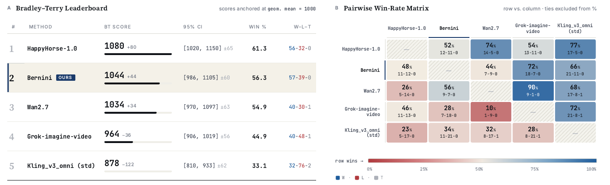
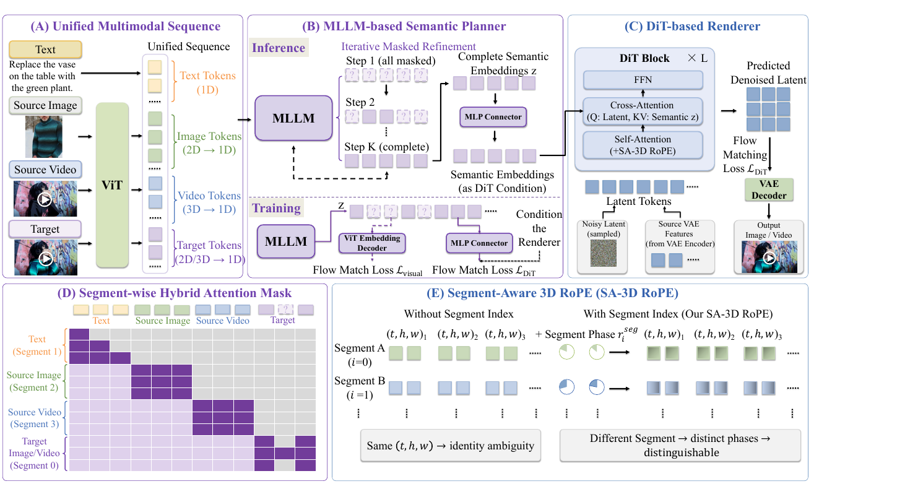
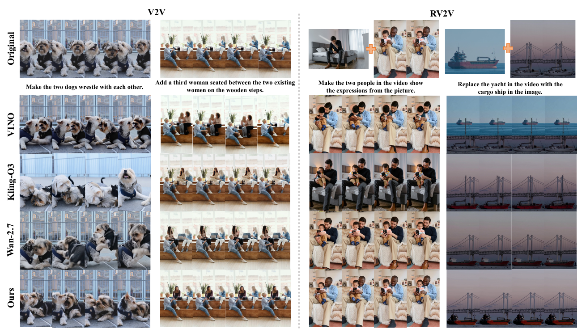
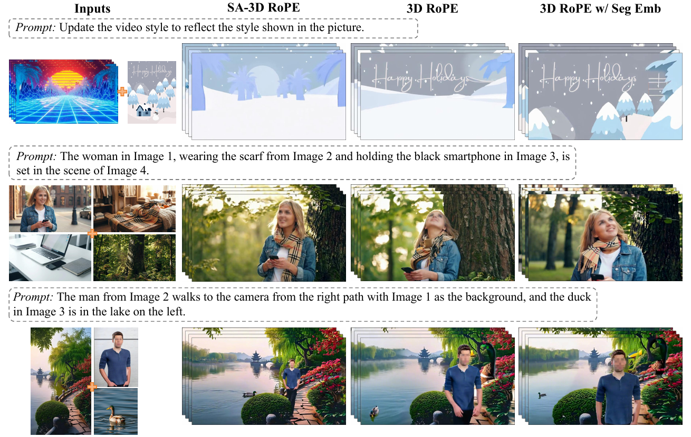

Bernini: Latent Semantic Planning for Video Diffusion

核心主张
MLLM 做语义规划，DiT 做像素渲染，二者以 MLLM 自己的 ViT embedding 空间为接口，可分开训练、只轻量联训。
规划器
MAR 式掩码生成：目标视觉 token 训练随机掩码、推理从全掩码迭代 K 步填充；ViT decoder 用 flow matching 还原真值 embedding。
渲染器
Wan2.2 双专家 DiT，在 VAE 潜空间 flow matching；SA-3D RoPE 消除多段视觉输入的身份歧义；链式增量 guidance 拆四路条件。
系统工程
440K token 长序列训练（较此前 100K 提升 4.4×）；FSDP + Ulysses SP；序列打包 + 贪心装箱数据均衡；两阶段蒸馏做到 4 NFE。
1. 出发点 (Motivation)
这篇报告要回答一个已经被问了两年、但一直没有干净答案的问题：MLLM（会理解、会推理）和扩散模型（会画）怎么合成一个既懂意图又能生成的系统？
现有做法大多把两者「熔」进一个骨干：Emu3 把文本/图像/视频全量化成离散词表、从零训一个 transformer 做纯 next-token；Janus 保留自回归骨干但把理解和生成的视觉编码器拆成两路；Show-o、HunyuanImage 3.0、BAGEL 则各自用混合目标（AR + 离散扩散、MoE 专家）在一个 transformer 里耦合。这些方案的共同代价是：为了统一，往往要动骨干、从头训、或者牺牲掉预训练 MLLM 本来那身「理解肌肉」。
Bernini 的出发点是两个朴素观察：
- MLLM 天生适合语义推理——读长指令、grounding 多张参考图、在脑子里形成「输出该长什么样」的内部表征。
- 扩散生成天然可分解为「语义引导 + 细节保持」——高层内容由一个紧凑的语义信号决定，而细粒度保真（编辑时还要和源输入一致）才需要稠密的像素级 latent（VAE 特征）。关键是：语义信号本身不需要高分辨率——几个语义 token 就足以指定一整个场景。
于是就有了一条干净的分工线：让 MLLM 做语义推理，让扩散模型专注合成。剩下唯一的设计问题是——用什么表征在两者之间传递语义？Bernini 的答案是「不另造接口」：直接锚定到 MLLM 自己已经在用的 ViT embedding 空间。MLLM 本来就在这个空间里理解和表征视觉内容，所以训它「在 ViT embedding 里规划目标」和它的预训练表征天然对齐，几乎不需要额外适配。
这一点决定了整篇报告的气质：它不是又一个「大力出奇迹」的统一大模型，而是一个用最小改动把两个成熟组件缝起来、并想尽办法不破坏它们各自预训练能力的工程系统。
Planner（规划器）
基于 MLLM（Qwen2.5-VL-7B）的模块，输入多模态条件，输出「目标视觉内容」在 ViT embedding 空间里的语义表征。
Renderer（渲染器）
基于 DiT（Wan2.2-A14B）的模块，把 planner 给的语义计划 + 文本 + 源 VAE 特征，在 VAE 潜空间里 flow matching 去噪成最终图/视频。
ViT embedding 空间
MLLM 视觉编码器（ViT）输出的连续视觉特征空间。Bernini 把它当作 planner 和 renderer 之间的「语义接口」。
MAR / 掩码生成
Masked Autoregressive。训练时随机掩码一部分目标 token 让模型预测；推理时从全掩码开始，多步迭代由粗到细填满。Bernini 的 planner 用它做语义规划。
Flow Matching
连续型扩散/流的训练目标：学一个速度场把噪声「流」到数据。Bernini 的 ViT decoder 和 DiT 都用它。
SA-3D RoPE
Segment-Aware 3D RoPE。在标准时空 3D 旋转位置编码上，再乘一个「段相位」，让来自不同参考图/源视频的 token 即使坐标相同也能被区分。
V2V / RV2V / S2V
视频编辑任务类型：V2V=文本指令改视频；RV2V=文本+参考图改视频；S2V=给定主体参考生成视频。
2. 方法 (Method)

Bernini 由两大件组成：MLLM 规划器和 DiT 渲染器，中间夹一个 MLP connector 把 MLLM 的隐状态映射成渲染器需要的条件表征。下面按「统一输入 → 掩码规划 → 段感知 RoPE → 训练目标 → 推理 guidance」五步拆。
2.1 统一输入：所有任务串成一条序列
不管是文生图、文生视频、主体到视频，还是图/视频编辑，Bernini 都把它们串成同一条 token 序列（文本 token + 源视觉 token + 目标视觉 token）。MLLM 编码整条序列，产出捕捉目标意图的上下文隐状态 \(z\)：
—— 翻译：把「文字指令 + 所有源图/源视频 + 目标输出」拼成一句话喂进 MLLM，让它一次性读懂「要在什么素材上、做什么改动、得到什么」。$v^{\mathrm{tgt}}$（目标视觉 token）在训练时被随机部分掩码，推理时初始化为全掩码——因为推理时你还没有目标，正是要模型把它「想」出来。
这个「统一输入协议」是 Bernini 能用一套架构覆盖多任务的前提：没有 task-specific 的分支，任务差异只体现在序列里放了哪些 segment、以及各 segment 的掩码策略。
2.2 掩码语义规划：把 MLLM 改造成规划器
视觉语义 latent 本质是双向的（不像文本有天然从左到右的因果性），所以 Bernini 用掩码生成范式而非自回归。训练时随机掩掉一部分目标视觉 token（换成共享的 mask token），让 MLLM 从可见 token + 周围多模态上下文推断被掩内容；掩码比例从一个 task-dependent 的 Beta 分布 \(r\sim\mathrm{Beta}(\alpha,\beta)\) 采样。
被掩位置的 MLLM 隐状态送进一个 ViT embedding decoder（一个 MLP + ResNet 预测头，学 MAR [39] 的设计），用 flow matching 在 ViT embedding 空间里还原真值 embedding。推理时所有目标 token 从全掩码起步，按余弦调度逐步减少掩码数、迭代 K 步由粗到细：
—— 翻译：第 k 步（共 K 步）还剩多大比例是掩着的。k 从 0 涨到 K−1 时，$\cos$ 从接近 1 平滑降到 0——一开始几乎全掩、每步敢确定的 token 很少，越到后面越自信、一次填一大批。这正是 MaskGIT/MAR 那套「先画轮廓再补细节」的填色顺序。
代码对照 ①：推理端的迭代掩码规划循环。 论文 §2.1.1 的余弦调度和「预测→回填→再预测」在 pipeline.py 里一字不差：
repo/bernini/pipeline.py:L744,L763-L828 — MLLM 规划器的迭代掩码精化循环
mask_ratio_generator_infer = lambda s, totals: np.cos(math.pi / 2.0 * (s + 1) / totals)
# ...
for step in tqdm(range(planning_step), desc=f"Sample FM+MAR clip in {planning_step} steps"):
hidden_state = self.text_encoder(inputs_embeds=input_embeds.clone(), ...).hidden_states[-2]
uncond_hidden_state= self.text_encoder(inputs_embeds=uncond_input_embeds.clone(), ...).hidden_states[-2]
imgcond_hidden_state=self.text_encoder(inputs_embeds=imgcond_input_embeds.clone(), ...).hidden_states[-2]
# 从倒数第二层取视觉输出位置的隐状态，过 connector 得到预测的 ViT embedding
pred_vit_embed_mllm = self.connector.for_vit(hidden_state[:, visual_output_token_mask, :])
# 下一轮的掩码比例，遵循 MaskGIT / MAR
mask_ratio = mask_ratio_generator_infer(step, planning_step)
mask_len = torch.Tensor([np.floor(n_query_tokens * mask_ratio)]).to(device)
mask_len = torch.maximum(torch.Tensor([1]).cuda(),
torch.minimum(torch.sum(mask, -1, keepdims=True) - 1, mask_len))
mask_next = torch.scatter(torch.zeros_like(mask), -1, order[:mask_len.long()],
torch.ones_like(mask)).bool()
mask_to_pred = mask.bool() if step >= planning_step - 1 else torch.logical_xor(mask.bool(), mask_next)
# 只对「这一轮要定下来」的 token 跑 ViT decoder 的 flow-matching 去噪
cur_pred_vit_embed = self.sample_vit_decoder(
vit_embed=pred_vit_embed_mllm[:, mask_to_pred.nonzero(as_tuple=True)[0]],
vit_txt_cfg=vit_txt_cfg, vit_img_cfg=vit_img_cfg, sample_steps=vit_denoising_step)
注意三件事：hidden_states[-2] 说明用的是倒数第二层隐状态（和 §6.1 里「penultimate-layer」一致）；order = shuffle(...) 是随机生成顺序（MAR 精神）；每一步同时前向三条（cond / uncond文本 / img-cond）是为下一步的 ViT-decoder CFG 准备的。
代码对照 ②：ViT decoder 的 flow-matching 损失 \(\mathcal{L}_{\text{visual}}\)。 论文说 decoder 在 ViT embedding 空间用 flow matching 训练，代码里就是一个标准 FM MSE，z 是条件（被掩位置的 MLLM 隐状态）、target 是真值 ViT embedding：
repo/bernini/models/diffloss_fm.py:L101-L133 — ViT embedding decoder 的 flow matching 损失
def forward(self, target, z, mask=None):
# multi noise trick：同一个 target 复制 diffusion_batch_mul 份，摊薄采样方差
z = z.reshape(seq_len, -1).repeat(self.diffusion_batch_mul, 1)
target = target.reshape(seq_len, -1).repeat(self.diffusion_batch_mul, 1)
x = target
timestep = self.scheduler.timesteps[timestep_id].to(dtype=z.dtype, device=z.device)
noise = torch.randn_like(x)
x_t = self.scheduler.add_noise(x, noise, timestep).to(z.dtype) # 在真值 embedding 上加噪
model_pred = self.net(x_t, timestep, c=z) # 条件 z 预测速度场
model_target = self.scheduler.training_target(x, noise, timestep) # flow matching 目标
loss = F.mse_loss(model_pred.float(), model_target.float(), reduction="none")
loss = loss.view(x.shape[0], -1).mean(dim=1) * self.scheduler.training_weight(timestep).to(x.device)
if mask is not None:
loss = loss * mask # 只在被掩位置计损失
return loss
这解释了 planner 的「双分支」设计——connector.for_vit（还原 ViT embedding，服务规划）和 connector.for_gen（给 DiT 当条件，服务渲染）是两条独立投影：
repo/bernini/models/bernini.py:L72-L99 — MLP connector 的双分支：gen 分支给 DiT、vit 分支还原 ViT embedding
if enable_gen_branch:
self.proj_gen = nn.Sequential(nn.Linear(in_dim, out_dim_for_gen), nn.GELU(),
RMSNorm(out_dim_for_gen), nn.Linear(out_dim_for_gen, out_dim_for_gen)) # out=4096 → DiT 条件
if enable_vit_branch:
self.pred_vit = nn.Sequential(nn.Linear(in_dim, out_dim_for_vit), nn.GELU(),
nn.Linear(out_dim_for_vit, out_dim_for_vit), RMSNorm(out_dim_for_vit),
nn.Linear(out_dim_for_vit, out_dim_for_vit)) # out=3584 → ViT embedding
def for_gen(self, x): return self._run_projection(self.proj_gen, x)
def for_vit(self, x): return self._run_projection(self.pred_vit, x)
out_dim_for_vit=3584 正是 Qwen2.5-VL 的 ViT/隐藏维度——config 里 z_channels/target_channels/out_dim_for_vit 全是 3584，与「ViT embedding 空间做接口」一致。
2.3 SA-3D RoPE：给「同坐标不同段」的 token 消歧
这是全文最漂亮的一个小设计。当 Bernini 把多张参考图、源视频、目标输出全拼进一条序列，不同 segment 的 token 可能撞上相同的 \((t,h,w)\) 坐标——标准 3D RoPE 只编码时空位置，此时它们的位置相位一样，注意力分不清「这个特征属于参考图 1 还是源视频」，于是就发生 §6.6 图里那种「参考图的背景/材质泄漏到目标里」的现象。
SA-3D RoPE 的解法：给每个 segment 一个下标 \(i\)（目标段 \(i=0\)，输入段 \(i=1,2,\dots\)），构造一个全维旋转频率向量 \(r_i^{\text{seg}}\) 编码这个下标，再复数逐元素乘到标准 3D RoPE 上：
—— 翻译：原来每个 token 的旋转相位只由它的时空坐标 $(t,h,w)$ 决定；现在再叠一个只跟「它属于第几段」有关的全局相位。$\odot$ 是复数逐元素相乘，也就是相位相加。于是「参考图 1 的左上角」和「源视频的左上角」即使时空坐标相同，也因为段相位不同而在注意力里可区分——像给每个人的手表统一拨快了固定的时区。
代码对照 ③：SA-3D RoPE。 use_src_id_rotary_emb=True 时，多算一个 freqs_visual_id 并乘上去，正是 Eq. 2 的 \(\odot\)：
repo/bernini/models/transformer_wan.py:L269-L289 — SA-3D RoPE：段相位 ⊙ 标准 3D RoPE
freqs_f = freqs[0][:ppf].view(ppf, 1, 1, -1).expand(ppf, pph, ppw, -1)
freqs_h = freqs[1][:pph].view(1, pph, 1, -1).expand(ppf, pph, ppw, -1)
freqs_w = freqs[2][:ppw].view(1, 1, ppw, -1).expand(ppf, pph, ppw, -1)
freqs = torch.cat([freqs_f, freqs_h, freqs_w], -1).reshape(1, 1, ppf * pph * ppw, -1) # 标准 3D RoPE
if self.use_src_id_rotary_emb:
# source_id 可以是分数：把超训练范围的多参考 id 均匀映射进已训 id 区间，
# 让旋转相位落在已训流形内而不是外推到没见过的整数 id
pos = torch.tensor([float(source_id)], dtype=torch.float64, device=hidden_states.device)
freqs_visual_id = get_1d_rotary_pos_embed(self.attention_head_dim, pos, self.theta,
use_real=False, repeat_interleave_real=False, freqs_dtype=torch.float64)
freqs_visual_id = freqs_visual_id.view(1, 1, 1, -1).expand(ppf, pph, ppw, -1)
freqs_visual_id = freqs_visual_id.reshape(1, 1, ppf * pph * ppw, -1)
freqs = freqs * freqs_visual_id # ← Eq.2 的 r̃ = r_{t,h,w} ⊙ r_i^seg
代码比论文多讲了一层论文没写的工程细节：source_id 允许是分数。当推理时参考图数量超过训练见过的最大 max_trained_src_id（默认 5），它把这些 id 均匀铺进 [1, max_trained] 区间（interpolate_src_id），让旋转相位停在「训练见过的流形」内而不是外推到没见过的整数下标——这是让模型泛化到「更多参考图」的关键 trick。段 id 的分配在 wan_diffusion.py:400：噪声目标恒为 source_id=0，每个条件源从 1 开始。
2.4 训练目标：三个损失加权和
—— 翻译：三件事同时练。$\mathcal{L}_{\text{ntp}}$（next-token 预测）保住 MLLM 原本的语言/理解能力不退化；$\mathcal{L}_{\text{visual}}$（ViT 空间 flow matching）教 planner 把目标语义规划出来；$\mathcal{L}_{\text{dit}}$（VAE 空间 flow matching）教 renderer 把语义画成像素。$\lambda_{\text{text}}=0.2$，另两个为 1——文本损失权重压低，因为它只是「防遗忘」的正则，不是主线任务。
三阶段训练（见 §4）：Stage I 只练 planner + ViT decoder（\(\lambda_{\text{text}}\mathcal{L}_{\text{ntp}}+\lambda_{\text{visual}}\mathcal{L}_{\text{visual}}\)，256p）；Stage II 只练 DiT renderer（\(\mathcal{L}_{\text{dit}}\)，480p，保留 T5 文本编码器）；Stage III 轻量联训对齐两者。「分开训、只轻量联训」正是「语义当接口」带来的红利——两个组件的预训练能力都不会在早期互相干扰中被冲垮。
2.5 推理 guidance：把四路条件拆成可独立调节的增量
渲染时有四种条件：源视频 VAE 特征、源图 VAE 特征、文本特征、目标语义 embedding。Bernini 不是简单 CFG，而是把预测拆成一个无条件基项 + 四个逐级增量：
其中每个增量是「多加一路条件」相对「上一级」的差，例如 \(\Delta_{\text{txt}} = \epsilon_{\text{txt,∅,vid,img}} - \epsilon_{\varnothing,\varnothing,\text{vid,img}}\)。
—— 翻译：从「什么都不给」的基准预测出发，一路一路把条件加回去，每加一路就量一次「这路条件让预测变了多少」（增量 Δ），再各自配一个旋钮 ω 控制它的强度。想让编辑更贴指令就调大 $\omega_{\text{txt}}$，想让非编辑区更像原视频就调大 $\omega_{\text{vid}}$——四路解耦、互不打架。
代码对照 ④：链式增量 guidance。 论文 Eq. 8–12 在 wan_diffusion.py 里就是一个「每路条件对上一路做差、再累加」的循环（还叠了 APG 投影抑制过饱和）：
repo/bernini/models/wan_diffusion.py:L117-L124 — 链式 APG guidance：Eq.8-12 的四路逐级增量
def normalized_guidance_chain(pred_uncond, preds, scales, momentum_buffers, eta, norm_thresholds):
"""Chained APG: each condition's diff is taken against the previous one."""
bases = [pred_uncond] + list(preds)
result = pred_uncond
for i, cond in enumerate(preds):
nd = _normalize_diff(cond - bases[i], cond, momentum_buffers[i], eta, norm_thresholds[i])
result = result + scales[i] * nd # result += ω_i · Δ_i，Δ_i = 本级 − 上一级
return result
cond - bases[i]（本级预测减去上一级预测）就是 \(\Delta\) 的定义；result += scales[i] * nd 就是把带权增量累加回去。不同任务的 \(\omega\) 见论文 Table 5（如 V2V：\(\omega_{\text{txt}}=4.0,\ \omega_{\text{vid}}=1.25,\ \omega_{\text{tgt}}=0.5\)）。
3. 结果 (Results)
Bernini 的实验覆盖三条线：视频编辑、主体到视频、文生视频，外加消融。底座是 Qwen2.5-VL-7B（规划器）+ Wan2.2-A14B（渲染器）。
视频编辑（主战场）。
- 自建 Bernini-Bench（300 例、22 类编辑）：V2V 总分 3.49（Wan2.7 为 3.30，Kling O3 为 3.05）；尤其在 Video Consistency（非编辑区一致性）3.51 vs Wan2.7 的 3.11 拉开明显差距——这正是编辑模型最容易翻车、也最被忽视的维度。
- OpenVE-Bench（Gemini 2.5 pro 评）：总分 4.04，大幅超过次优 VINO 的 3.18；Camera Edit 一项 4.67 vs 次优 2.81。
- EditVerse：editing quality 8.02（次优 EditVerse 7.65），pick score / text alignment 均第一。
- FiVE：VQA 类 FiVE-Acc 系列全面 SOTA（Acc 78.16 vs 次优 Omni 72.41），结构/背景保持也接近最好。
主体到视频（OpenS2V-Eval）。 总分 62.94，超过所有闭源+开源对手（Kling O3 59.19、RefAlign-14B 60.42）。最亮眼的是 FaceSim 78.20，比次优 Kling O3 的 57.20 高出 20+ 个绝对点——多参考主体驱动里长期的老大难「人脸身份保持」被显著改善。这一条最能说明「MLLM 的理解能力真的迁移进了生成」。
文生视频（VBench，防退化验证）。 Bernini 总分 84.64，几乎持平底座 Wan2.2-A14B 的 84.79。这条不是为了赢，而是证明：把 Wan2.2 扩成统一框架、加了编辑和主体生成能力后，原来的文生视频质量没被牺牲。
消融。
- SA-3D RoPE（Fig. 15）：对比标准 3D RoPE、以及「3D RoPE + 可学习段 embedding」。加段 embedding 确实比 vanilla 好（如第二行的围巾一致性），但两个 baseline 都仍有明显的参考泄漏（第一行背景、第三行鸭子头串味）。结论：当多段共享 \((t,h,w)\) 时，加性段 embedding 不够，必须靠相位调制解耦身份与位置。
- ViT 语义接口 + MLLM 规划器（Fig. 16）：去掉 ViT 语义接口→指令跟随变弱（该换成机器狗的没换、该加的飞鸟没加）；两个都去掉→进一步退化。证明两者互补且都是「精确编辑」的必要件。
- 推理增强（Table 10）：baseline 3.12 → 用自身自文本推理 3.33 → 换 GPT-5.4 做 prompt enhancer 3.49 → 再加视觉-文本推理 3.52。多模态推理相对纯文本推理有增量收益。


4. 实现细节与系统工程 (Implementation & Systems)
这是一篇带完整工程报告的技术论文，实现细节既有算法侧也有系统侧。≥5 处可对照的关键实现：
-
MLLM 只取倒数第二层、零初始化 MLP、与 T5 拼接（§6.1）。为了不破坏 Wan2.2 的预训练文本条件分布，Bernini 保留原 T5 特征，只把 MLLM 倒数第二层过一个 zero-init 单层 MLP 再和 T5 concat。config 里
t5_combine_type: "concat_with_zero_init"坐实——零初始化保证训练初期 MLLM 分支「先不说话」，不冲垮 Wan2.2 的先验。对应pipeline.py里hidden_states[-2]。 -
task-dependent 掩码比例（§4.1，Table 3）。\(r\sim\mathrm{Beta}(\alpha,\beta)\)，从文本生成（\(\alpha{=}5,\beta{=}1.1\)）到视频编辑（\(\alpha{=}12,\beta{=}0.9\)），\(\alpha\) 增大把分布推向 \(r{\to}1\)，即输入信息越充分、掩得越狠，逼 planner 从高层上下文而非「偷看」可见目标 token 来推断——编辑任务里源和目标高度相关，不这么做规划会「太容易」而学不到东西。
-
task-dependent 噪声调度（§4.2，Table 4）。图像任务用 logit-normal 加权 + shift 3.0，视频任务用 mode 加权 + shift 5.0（follow SD3、Waver）。对应
scheduler.py的FlowMatchScheduler。 -
分数段 id + 训练范围内插（
transformer_wan.py:274、wan_diffusion.py:400）。上面 §2.3 已述——这是论文正文没提、但代码里让「多参考泛化」成立的关键工程点。 -
两阶段蒸馏做到 4 NFE（§5.3）。先 CFG 蒸馏（把 cond/uncond 双次前向压成单次），再 ReFlow 拉直 ODE 轨迹。最终 4 NFE 的学生≈80 NFE 的教师。对应
wan_diffusion.py的双专家（high-noise/low-noise）采样器。 -
推理时 planner 开销可忽略（§4.2）。25 步语义规划、每步 ViT decoder 只跑 5 步去噪，相对后续 DiT 的 40–60 步渲染，运行时几乎可忽略——这是「语义信号不需要高分辨率」的直接兑现。
系统工程线（Infrastructure，§5）——这是本报告被低估的一半：
- 长序列训练：把每 GPU 显存从 72GB 压到 40GB（FSDP 调参 + 直接 index-scatter 到预分配 buffer，省掉 17GB 中间分配 + 自定义激活 offload），最终支持 440K token 序列，较此前 100K 提升 4.4×。
- 算子级优化：DiT 用 FlashAttention-4、MLLM 用 FlexAttention，异步 QKV 通信、TND 内存布局免转置、QuACK 的高性能 RMSNorm，合计最高 46% 加速。
- 并行：DiT 和 MLLM 都用 Ulysses 序列并行（MLLM 侧扩展后 SP=4 拿到 2× 吞吐），只在长序列任务开 SP 避免短输入的通信浪费。
- 序列打包 + 数据均衡：token-bucket 分桶 + 贪心 bin-packing 负载均衡（max/min 工作量比 <1.01），端到端吞吐 ~4.5×。
- 推理并行：DiT 上 DeepSpeed Ulysses + 异步 all-to-all，VAE 上时间维 context parallelism + 异步 conv cache 传输，合计 >7.2× 加速。
论文↔代码差异排查： 未发现实质性冲突。开源仓库同时提供 **Bernini（7B planner + 14B renderer 全套）**和 Bernini-R（仅 renderer，从 Wan 微调）两族——README 的基准表显示 Bernini-R 14B 在纯质量指标上接近全套 Bernini，但 Bernini-V2V 总分（3.25 vs 3.49）落后，正好印证「MLLM planner 主要贡献在复杂指令的语义规划、而非渲染质量」。唯一「论文未明写、代码才有」的是 §2.3 的分数段 id 内插，属于增强而非矛盾。
5. 批判与延伸 (Critique & Related)
5.1 弱点与局限（部分作者已自陈）
- 强依赖底座和外部改写器。 作者自陈：复杂编辑时仍需一个强 LLM 改写器（GPT-5.4）提供足够结构化的指令——Table 10 里「+PE(GPT-5.4)」相对「自身自文本」的跳变（3.33→3.49）说明模型自身的原生推理还不足以吃下最难的指令。「MLLM 做语义规划」的叙事很干净，但当前实例里最难那部分推理其实外包给了 GPT-5.4。
- 视觉质量仍逊于最强闭源。 主体到视频虽然一致性 SOTA，但绝对视觉质量仍不及 Wan2.7 这类更强系统（作者自陈）。Bernini 的强项是「一致性/身份保持」，不是「画面上限」。
- 人评榜第 2 而非第 1。 Fig. 1 里 Bernini 输给内部闭源 HappyHorse，且这是 Bernini 480p 对 baseline 720p——分辨率不对等下的比较，读者需自行折算。
- 评测大量依赖 MLLM 打分（GPT-5.4 / Gemini 2.5 pro）。 作者也承认 MLLM 判不准小尺度失真/伪影，故 GQ 维度「仅供参考」。自动分的绝对值需谨慎。
- 规划步数/掩码调度是超参迷宫。 25 步规划 × 每步 5 步 ViT 去噪、6 类任务各一套 \((\alpha,\beta)\) 和 shift、四路 \(\omega\) 各任务不同——落地复现的调参面很大，报告给了表但没给敏感性分析。
5.2 交叉验证：与相似工作的结论对照
Bernini 的「语义规划 / 像素渲染」二分，和近一年另外两条线的工作在**「压缩的高层信号 + 廉价渲染器」**这个核心观察上高度一致，但在「MLLM 到底插在哪」上分歧明显：
| 维度 | Bernini（本文） | Boogu-Image boogu-image-2026 | L2P / AsymFlow l2p-2026 · latent-to-pixel-2026 |
|---|---|---|---|
| MLLM 的角色 | 语义规划器：预测目标 ViT embedding（生成式） | 指令编码器 + 改写器：给 DiT 当文本条件（判别式/编码） | 不用 MLLM，聚焦 latent→pixel 迁移本身 |
| 语义接口 | MLLM 自己的 ViT embedding 空间（连续、双向、掩码生成） | 文本 embedding（Qwen3-VL 隐状态当 cross-attn 条件） | LDM 的 latent 流形（把 latent flow lift 到像素） |
| 底座怎么用 | Qwen2.5-VL + Wan2.2，分开训只轻量联训 | Lumina-Image-2 谱系 DiT，从头训生成侧 | 冻结预训练 LDM 大部分层，只训首尾 + Detailer |
| 共同观察 | 高层语义信号不必高分辨率；细节交给稠密像素/VAE | 同：紧凑条件定内容，DiT 补像素 | 同：LDM 已学到的平滑流形足以指导像素，无需从零 |
| 关键分歧 | 让 MLLM 生成语义（planner），而非只编码指令 | 让 MLLM 编码/改写，生成完全交给 DiT | 根本不引入 MLLM，问题定义在「像素扩散怎么省 cold-start」 |
分歧的可能成因： 三者对「MLLM 的理解能力值不值得直接进生成回路」判断不同。Bernini 押注生成式规划——赌 MLLM 在 ViT 空间「想象目标」的能力能迁移成更强的指令跟随和身份保持（FaceSim +20 分是这个赌注的兑现证据）；Boogu 更保守，把 MLLM 当高质量文本编码器/改写器，避免动生成侧的稳定性；L2P/AsymFlow 干脆绕开 MLLM，只解决「像素扩散别从零 cold-start」这个正交问题。三条路互不冲突：可以预见「Bernini 式生成规划 + L2P 式冻结迁移渲染器」的组合会在未来出现——把 Bernini 的 Wan2.2 渲染器换成一个冻结迁移、原生高分的像素 renderer。
一个值得注意的一致「盲点」： 三者都严重依赖底座（Wan / Lumina / FLUX·Z-Image）的预训练质量，也都把「底座上限」列为主要 limitation。这说明当前这波「缝合式统一生成」的天花板，短期内仍由底层基座模型而非缝合方法本身决定。
6. 研究启发 (Transferable Takeaways)
接口即架构
把「两个成熟模型怎么合作」重构成「用谁已有的表征当接口」——Bernini 选 MLLM 自己的 ViT 空间，于是两边都不用大改、能分开训。缝合系统的关键设计往往不是新模块，而是接口的选址。
相位 > 加法
要给序列里的 token 打「身份标签」，加性 embedding（加到隐状态）会被后续层稀释、泄漏；乘性相位调制（⊙ 到 RoPE）把身份编进旋转、与内容正交，隔离得更干净。消融证明这不是等价选择。
零初始化接旁路
往预训练模型注入新条件时，用 zero-init MLP + concat（而非替换）让新分支「初始静默」，训练中再慢慢发声——保住底座先验的通用招式，Bernini 对 T5、ControlNet 对 UNet 同理。
反直觉：语义可以很便宜
25 步规划相对 40–60 步渲染开销「可忽略」，因为语义信号不需要高分辨率——几个 token 定一整个场景。别把「规划」也做成高分辨率的重活。
分数化离散 id
训练见过 id∈[1,5]，推理来了 8 个参考图？别外推到 id=6,7,8，把它们均匀内插进已训区间——让位置相位停在流形内。离散下标连续化是泛化到「更多」的通用 trick。
一致性是被忽视的战场
Bernini 赢主要赢在「不动不该动的」（Video Consistency、FaceSim），而非画面上限。编辑类任务里，非编辑区保持比生成质量更能拉开体感差距，也更少被 benchmark 单独度量。
延伸阅读：boogu-image-2026（MLLM 当编码器的统一生成+编辑）、l2p-2026 与 latent-to-pixel-2026（latent→pixel 迁移的两种刀法，与 Bernini 的语义/像素二分互补）。
讨论 / Comments
评论托管在本仓库的 GitHub Discussions, 需 GitHub 账号。